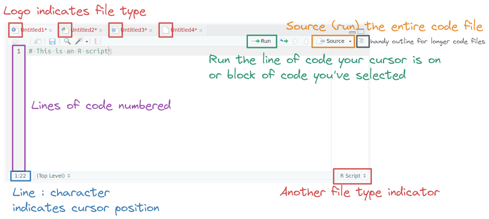
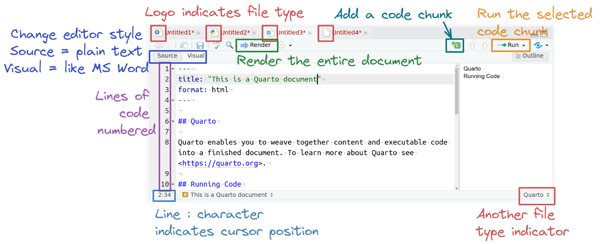
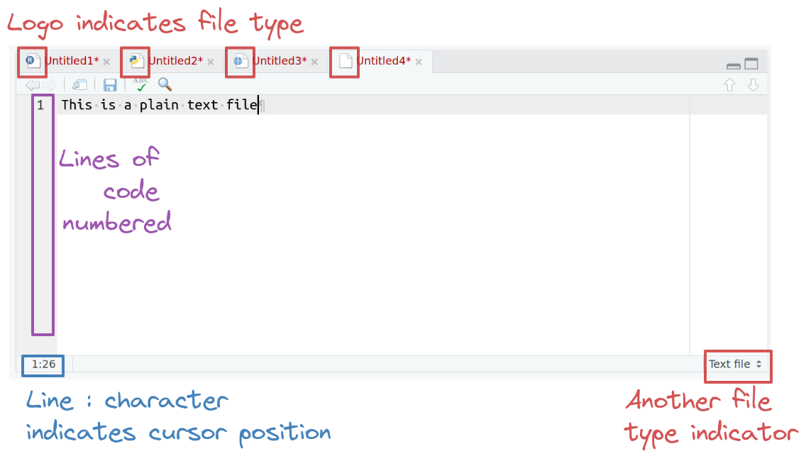
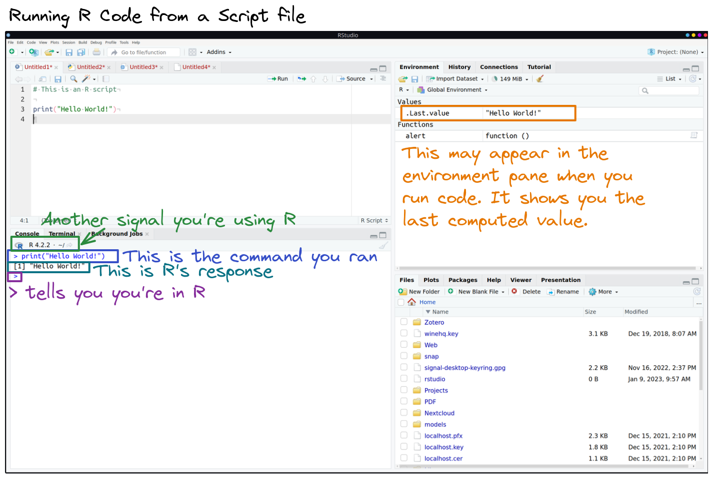
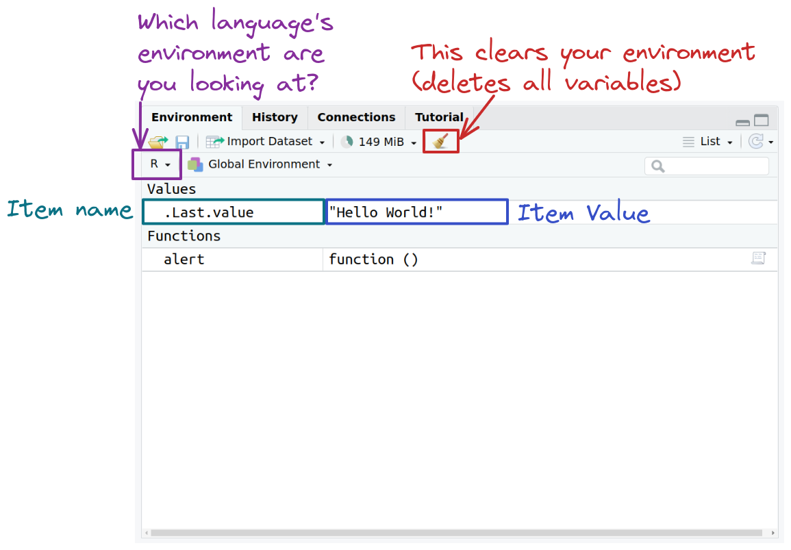
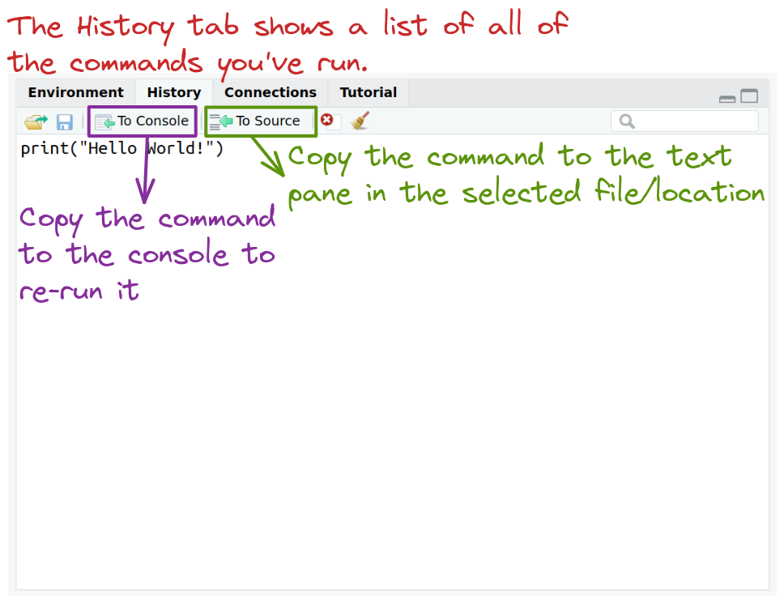
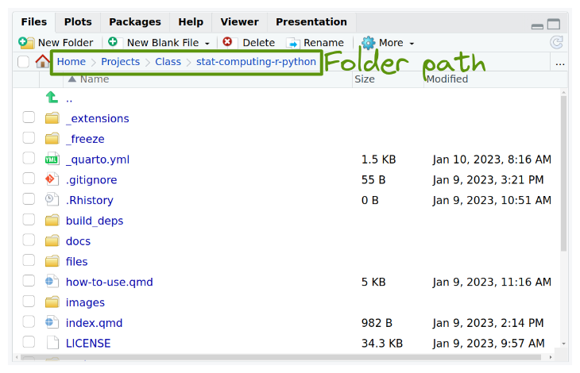
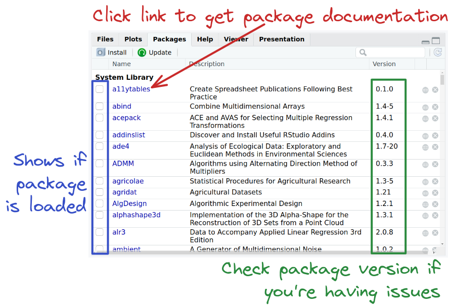
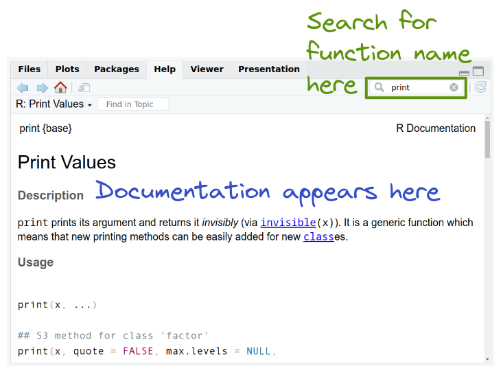
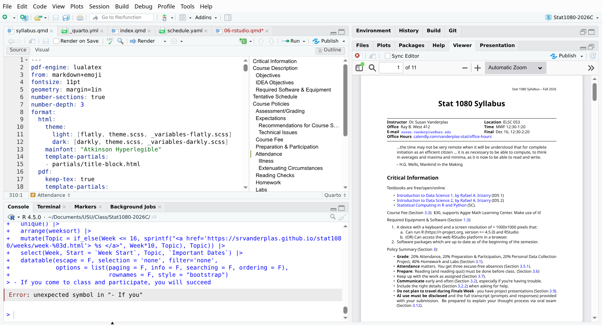

1.6 Introduction to RStudio
Important Buttons
![A screenshot of an RStudio window highlighting buttons for creating new files (top left), opening an RStudio project (top right). The main portion of the window shows the four panes in a default RStudio interface. The editor pane (top left), contains text files that may contain R or python code. The terminal/console pane (bottom left), contains the R console, system terminal, and a tab for background jobs. The top right pane contains the environment, history, connections, and tutorial tabs by default, and may also contain tabs labeled build and git, depending on your project setup. The environment tab shows you what objects are currently in your programming environment - that is, what things are defined. The bottom right pane contains the files, plots, packages, help, viewer, and presentation tabs. By default, the files tab will show you your current working directory; if you are not working in a project, then it will show your home directory, which is the default working directory.](images/Rstudio-important-buttons.png)
The File Editor (Top Left)

The logo on the script file indicates the file type.
When an R file is open, there are Run and Source buttons on the top which allow you to run selected lines of code (Run) or source (run) the entire file.
Code line numbers are provided on the left (this is a handy way to see where in the code the errors occur), and you can see line:character numbers at the bottom left.
At the bottom right, there is another indicator of what type of file Rstudio thinks this is.
The File Editor (Top Left)

The logo on the script file indicates the file type.
When a quarto markdown file is open, there is a render button at the top which allows you to compile the file to see its “pretty”, non-markup form.
In the same toolbar, there are buttons to add a code chunk as well as to run a selcted line of code or chunk of code.
You can toggle between source (shown) and visual mode to see a more word-like rendering of the quarto markdown file.
Code line numbers are provided on the left (this is a handy way to see where in the code the errors occur), and you can see line:character numbers at the bottom left.
At the bottom right, there is another indicator of what type of file Rstudio thinks this is.
The File Editor (Top Left)

The logo on the text file indicates the file type.
When a text file (or other unknown file extension) is open, there are very few buttons in the editor window.
Code line numbers are provided on the left (this is a handy way to see where in the code the errors occur), and you can see line:character numbers at the bottom left.
At the bottom right, there is another indicator of what type of file Rstudio thinks this is.
The Console Pane (Bottom Left)

When running R code from a script file, the console will show you that you are running in R by the logo at the top of the console pane.
You will initially see lines indicating that you’re running R (they’re missing here because this isn’t the first command I ran in this session).
The command you ran will appear after >, and the results will appear immediately below, with boxed numbers in front of each sequential line.
A > waits for a new command.
In the environment pane, you may see a new value pop up named .Last.value - this is part of user settings and you can stop it from appearing if you want to.
Environment Tab (Top Right)

The environment tab shows you all of the objects in memory that the language you’re working in knows about.
History Tab (Top Right)

The history tab shows you a list of all commands you’ve run and allows you to send them to the console or to source (the text editor).
Files Tab (Bottom Right)

The files tab shows you the files in your current working directory (by default), though you can navigate through it and find other files as necessary.
If you want to return to your working directory, there’s a button for that in the “More” menu.
One of the most important pieces of information in this pane is your path - you can construct the file path by using ~/ for home, and then for each folder, adding a slash between. The path to the folder we’re looking at here is thus ~/Projects/Class/stat-computing-r-python/.
Packages Tab (Bottom Right)

You can get important information from the packages tab, like what packages are loaded, easy access to documentation for each package, and what version of the package is installed.
Help tab (Bottom Right)

The help tab makes it easy to get access to function documentation within Rstudio, so you don’t have to switch windows.
The Viewer Tab (Bottom Right)

The Viewer tab is where you will preview quarto documents – which is how you will submit some labs and homework assignments in this class.
You should always preview your documents before submitting them to make sure they look correct.
You can also set a specific quarto document to open in a browser or in the system PDF viewer.